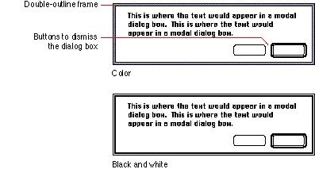

|
Modal Dialog Box AppearanceModal dialog boxes are framed by a double-outline border that doesn't include a drag region. The outer line is one pixel thick and the inner line is two pixels thick. A modal dialog box cannot be moved or resized. Figure 6-14 shows the appearance of a modal dialog box in color and black and white.Figure 6-14 The essential elements of a modal dialog box  |